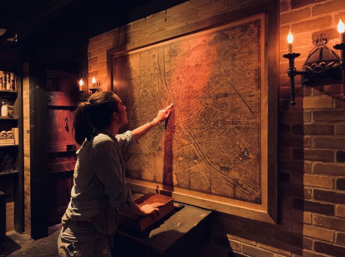
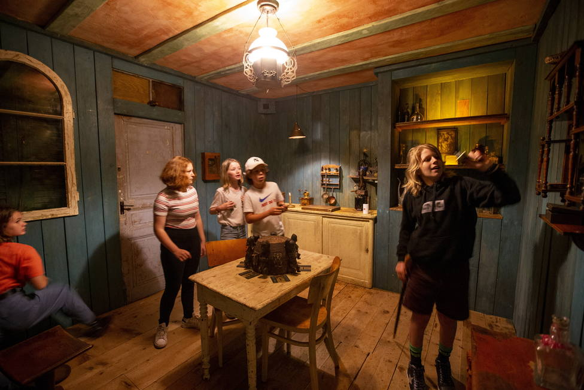

Las salas
Ingenio
Para las salas temáticas de ingenio deberás utilizar el mayor porcentaje de tu coeficiente intelectual. Tiene cuatro puertas de escape pero sólo una de ellas te deja salir sano y salvo. Sortear los obstáculos para escapar de la sala.
Misterio
Las salas de Misterio tematizadas contemplarán un hospital psiquiátrico abandonado que parece albergar todavía pacientes que no están en este plano. ¿Pueden descubrir qué los llevó al deceso? Tienes los legajos de los pacientes antiguos, una cámara de seguridad que aún funciona y pertenencias de los habitantes que hace un tiempo vivieron en el sanatorio
Musical
Tu destreza en el baile y el canto te dejarán ganar la estrella de oro. El trofeo que abrirá la puerta de salida.
Miedo

En las salas de terror encontraremos una casa de antaño deshabitada que tiene consigo un oscuro secreto y un alma en pena que aún no consigue cruzar al inframundo. Encontrarás mensajes pintados en las paredes. Para descifrar otros tantos deberás ver más allá de lo que muestran tus ojos